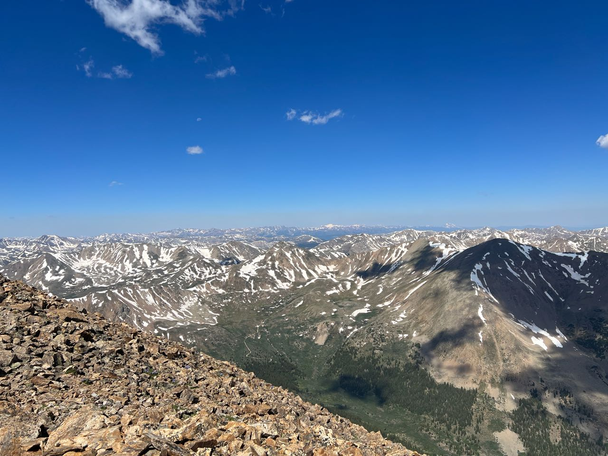
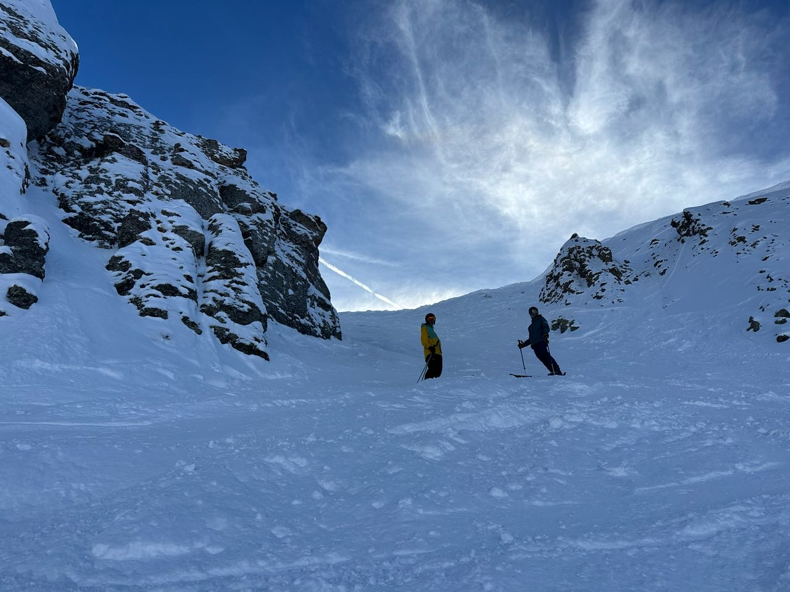

About
Originally from St. Louis, Missouri. I hold an MS in Computer Science (Robotics) and a BS in Computer Science from the University of Denver, where I spent three years as a Research Assistant in the ARISE Lab under Dr. Christopher Reardon. I now work at Sandia National Laboratories as an Autonomy & Counter-Autonomy Researcher, focusing on autonomous testing, physical security evaluation, and adversarial robotics.


What I work on
Learning robot behaviors
Multi-agent reinforcement learning for coordinated behavior: MADDPG policies with centralized training and decentralized execution, carried from a 2D training world into a 3D ROS autonomy stack.
How the sim-to-real transfer workedComputer vision & perception
Detecting, tracking, and localizing people: LiDAR–camera fusion, camera-only range estimation, and EKF-filtered tracks that feed motion prediction.
See the perception pipelineNavigation
Autonomy where GPS doesn't reach: human-safe navigation in underground mines, SLAM and occupancy-grid planning on Clearpath ground robots, and autonomous testing with Boston Dynamics Spot.
Underground navigation paperMulti-robot systems
Heterogeneous air–ground teams: FORWARD-PF, my predictive waypoint-assignment algorithm, plus spatial tasking of micro-drones and coordinate-frame alignment across robots.
Read my thesis, illustratedHuman-robot interaction
Robots that work around and with people: augmented-reality visualization of what a robot perceives, user studies with human participants, and person-following that doesn't depend on the person cooperating.
ACM THRI paperToolbox
Work history
-
Aug 2024 – Present
Autonomy & Counter-Autonomy Researcher
Sandia National Laboratories, Albuquerque, NM
- Lead autonomous testing workflows using the Boston Dynamics Spot robot to evaluate and calibrate physical security sensors.
- Conduct red-team assessments of physical security systems using autonomous and semi-autonomous platforms to identify adversarial exploitation paths.
- Research counter-autonomous techniques to detect, mitigate, and defend against adversarial robotic threats.
-
Mar 2022 – Aug 2024
Graduate Research Assistant
University of Denver, ARISE Lab
- Master's thesis: designed FORWARD-PF, a predictive waypoint-assignment algorithm for air–ground person-following, and benchmarked it against a MADDPG multi-agent RL policy adapted from 2D training to a 3D ROS autonomy stack.
- Demonstrated robotic GPS-denied human-safe navigation in sparsely featured underground mine environments.
- Poster presentation at the Robot Teammates in Dynamic Unstructured Environments workshop at ICRA 2023, London.
-
Mar 2022 – Jun 2023
Journeyman Fellow
U.S. Army DEVCOM Army Research Laboratory, Adelphi, MD
- Developed a heterogeneous air-ground robot system with person-following capabilities.
- Presented at the Heterogeneity in Multi-Robot Systems workshop at ICRA 2023, London.
-
Jan 2021 – Mar 2022
Undergraduate Research Assistant
University of Denver, ARISE Lab
- Developed person-following capabilities for a holonomic ground robot platform.
- Ran HRI studies with human participants; awarded Partners in Scholarship Grant (PiNS).
-
May 2021 – Aug 2021
Software Engineer Intern
Trimble Inc., Westminster, CO
- Led development of an event notification service handling 250,000 messages/day on AWS ECS, Lambda, and SQS.
- Built in Python with Terraform as IaC; delivered features across agile sprints.
-
Jun 2019 – Sep 2019
Software Development Intern
Centene Corporation, St. Louis, MO
- Converted monolithic code into microservices using Golang to maintain and improve database APIs.

Education
-
2022 – 2024
MS, Computer Science (Robotics)
University of Denver, Ritchie School of Engineering & Computer Science
Thesis: Heterogeneous Multi-Robot Person-Following in Constrained Environments. Advisor: Dr. Christopher Reardon.
-
2018 – 2022
BS, Computer Science
University of Denver
Minors in Entrepreneurship Management and Mathematics.
Research

My thesis, illustrated
A plain-English, visual walkthrough of my M.S. thesis: two robots, one person to follow, and a hand-built forecaster versus multi-agent RL, from sim-to-real transfer to hardware.
Read the walkthrough-
Heterogeneous Multi-Robot Person-Following in Constrained Environments (M.S. Thesis)
University of Denver, August 2024
-
Heterogeneous Multi-Robot Person-Following in Constrained Environments
IEEE SSRR, November 2024
-
Augmented Reality Visualization of Autonomous Mobile Robot Change Detection in Uninstrumented Environments
ACM Transactions on Human-Robot Interaction (THRI), 2023
-
Teaming Heterogeneous Ground and Micro-Aerial Robots for Following of Non-Cooperative Agents
Heterogeneity in Multi-Robot Systems Workshop, ICRA, London, May 2023
-
Autonomous Agent-aware Navigation in Underground Mine Environments
Heterogeneous Multi-Robot Cooperation in Extreme Environments Workshop, ICRA, London, May 2023
Trail log
Elevations come from each photo's GPS altitude, rounded to the nearest 10 ft.

